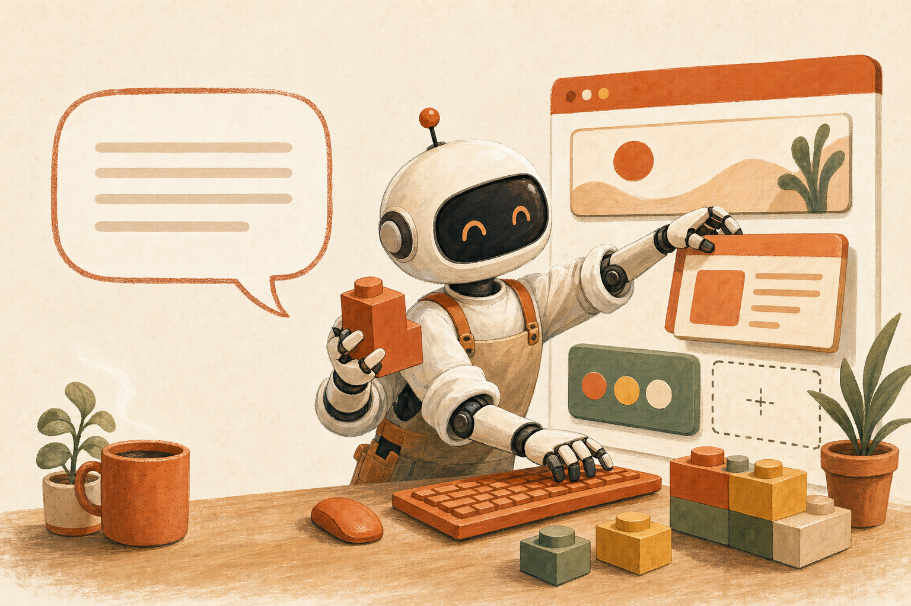

WHY THIS COURSE
這門課的四個承諾
01
零基礎
從「終端機是什麼」教起。指令與提示詞全有範本照抄，打字慢用語音輸入，安裝卡關有急救站。
02
可商用成品上線
不是練習題——你的訂餐系統帶真資料庫、有公開網址，下課直接拿去收單、貼到社群。

03
AI Agent 實戰思維
一般 AI 只會回答，AI Agent 會動手做事。搞懂差異與邊界，你就知道公司裡哪些事該交給它。

04
課後才是開始
結業即加入專屬課程群組：老師陪伴答疑、作品持續迭代、同學互相支援，不是上完就散。